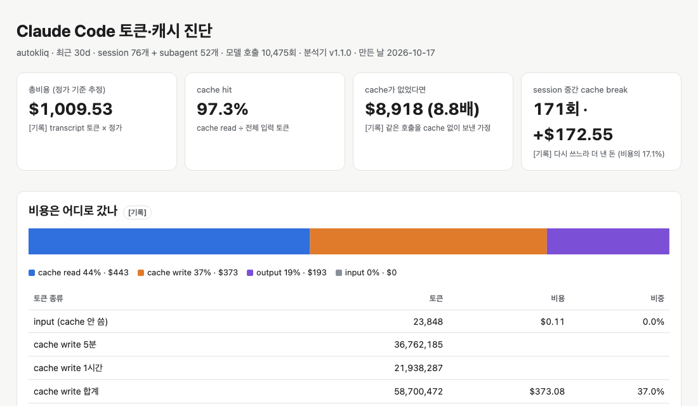

설정 세 개만 붙여도 같은 과제를 더 싸게, 덜 실패하며 끝냈습니다. 다만 진단 1위 수정은 효과가 없었습니다.
해 볼 것: 내 30일 기록에 /token-efficiency-summary를 돌리고, 상위 세 개를 켠 뒤 같은 과제로 다시 재 보세요. 추정 1위가 내 작업의 1위는 아닐 수 있습니다.
어떻게 했나
진단하고, 상위 세 개를 고치고, 같은 과제로 다시 쟀습니다. 사용자 설정 파일은 건드리지 않고 실행할 때만 붙였습니다.
- subagent cache 1시간 유지
- 안 쓰는 skill·MCP 목록 빼기
- prompt에 "작업 지도" 한 문단
수정 전 9 run · 수정 후 9 run
비용은 call마다 합산
run: 과제 하나를 사람 없이 자동으로 한 번 실행한 것.
통과: 그 과제를 고친 commit의 테스트(미리 숨겨 둠)가 통과하고, 새 실패가 없을 때.
cache: 매번 앞에 붙는 같은 내용을 저장해 두고 싸게 다시 읽는 기능. 저장이 살아 있는 시간을 TTL이라 합니다.
결과
통과는 늘고 비용은 줄었습니다. 줄어든 폭은 짧은 과제(T2)에서 가장 컸습니다.
| 지표 | 수정 전 | 수정 후 | 차이 |
|---|---|---|---|
| 통과 (9 run 중) | 7 | 9 | +2 |
| run 1번 비용, 중앙값 | $2.13 | $1.90 | −11% |
| 성공 1건당 비용 | $3.02 | $1.74 | −42% |
| token, 중앙값 | 2.2M | 2.0M | −12% |
| 같은 파일 다시 읽기, 평균 | 7.6번 | 3.9번 | −49% |
성공 1건당 비용은 실패한 run에 쓴 돈까지 더해 성공 수로 나눈 값입니다.
왜 그렇게 나왔나
진단 1위였던 "cache 1시간"은 이번 재실행에서 일할 자리가 없었습니다.
추정 1위가 내 작업의 1위는 아닙니다. 켜고, 같은 과제로 다시 재야 압니다.
그래서
- 진단은 지도일 뿐입니다. 상위 세 개를 켜고 같은 과제로 다시 재세요.추정 1위가 내 작업에서는 효과 0일 수 있습니다.
- run 한 번 비용보다 성공 1건당 비용을 보세요.싸게 실패한 run이 평균을 좋아 보이게 만듭니다.
- 짧은 과제가 많다면 매번 실려 가는 목록부터 빼세요.안 쓰는 skill·MCP 목록이 모든 call에 붙어 다닙니다.
다음 데모: 비용을 감당할 수 있게 됐으면, 사람 없이 오래 돌립니다. 끝났다는 건 누가 판정할까요?
자세한 기록
명령, 대시보드, 수정 코드, 과제 원문, run별 기록은 접어 두었습니다.
스킬 명령 · 말로 부르는 버전 · 측정기를 먼저 고친 이유
/token-efficiency-summary --last 30d --aggregate --project autokliq --dashboard token-dashboard.html
최근 30일 autokliq 프로젝트에서 Claude Code 비용이 어디로 갔는지 집계하고, 고칠 거리를 ROI 순으로 정리한 대시보드를 token-dashboard.html로 만들어 줘.
스킬은 이 요청을 아래 분석기 명령으로 바꿔 실행한다. 데모에서는 사용자 설정 폴더에 설치하지 않으려고 같은 명령을 분석기(v1.1.0, 테스트 33개 통과)에 직접 줬다.
python3 ~/.claude/scripts/analyze-tokens.py --last 30d --aggregate --project autokliq \ --dashboard token-dashboard.html --format json
측정기를 먼저 고친 이유. 고치기 전 분석기(v1.0.1)는 같은 30일에 "낭비" $1,360.89를 보고했다. 실제 비용 $938.88의 1.45배다. 패턴끼리 같은 토큰을 겹쳐 셌고, 1시간 cache write를 5분 가격으로 계산해 비용도 낮게 잡았다. 손질한 run에서도 "prefix 과다"가 7/7 떴고, Bash로 한 grep·find·rg는 탐색으로 세지 않았다.
v1.1.0은 call마다 실제로 낸 돈에서 한 번만 떼어 패턴에 준다. 그래서 "낭비" 합계가 $161.41(비용의 16%)로 내려왔고, 실제 비용을 넘을 수 없다. CLI가 보고한 비용과는 21 run 중 19 run이 센트까지 맞았다(나머지 2 run은 재시도 요청이 기록에 없다).
30일 대시보드 핵심 수치와 ROI 상위

| 항목 | 값 |
|---|---|
| 30일 총비용 | $1,009.53 · 76 session + subagent 52개 · cache가 없었다면 $8,918 (8.8배) |
| 비용 구성 | cache read $443(44%) · cache write $373(37%) · output $193(19%) · input $0.11 |
| cache가 깨져 더 낸 돈 | 171번 $172.55: subagent 5분 만료 104번 $102 · 1시간 넘게 쉼 37번 $57 · prompt 변경 29번 $12 · 모델 전환 1번 $0.74 추정 |
| ROI 상위 (고른 3개) | ① subagent TTL 1시간 최대 $55.77 · ② 안 쓰는 skill·MCP 빼기 $27.22 · ③ 작업 지도 $10.79 (30일, 상한) 추정 |
| 뺀 것 | 쉬기 전 /compact($58.55)·과제마다 새 session($69.27)은 습관이라 실행마다 켤 수 없음. 더 싼 모델($45.56)은 모델을 바꿈. 큰 도구 출력 줄이기($8.83)는 대부분 브라우저 스크린샷. |
스킬이 만든 대시보드 전체 열기 (공개용 사본: session ID, 파일 경로, prompt 내용 없음)
세 수정의 전체 코드 (PR 형식)
① subagent prompt cache TTL을 1시간으로 — 최대 $55.77/30일 추정
- claude -p ...+ CLAUDE_CODE_SUBAGENT_PROMPT_CACHE_TTL=1h claude -p ...
Why: 30일 동안 subagent cache가 5분 TTL 만료로 104번 깨져 $102.16를 다시 냈다. 1시간 저장이 더 비싼 몫 $46.40을 빼도 순 $55.77이 남는다.
② 안 쓰는 MCP·skill·plugin을 빼고 시작 — 최대 $27.22/30일 추정
- claude -p --settings before.settings.json ...+ claude -p --strict-mcp-config --mcp-config empty.mcp.json \ + --settings after.settings.json ...
// after.settings.json (발췌)
{
"disableAllHooks": true,
"enabledPlugins": { "code-review@claude-plugins-official": false, "posthog@claude-plugins-official": false, ... },
"disableBundledSkills": true,
"skillOverrides": { "dev-browser": "off", "eval-writer": "off", ... } // 사용자·plugin skill 212개
}
// empty.mcp.json
{ "mcpServers": {} }
Why: skill 목록, MCP 안내, 나중에 불러오는 도구 이름이 76개 session 중 74개의 모든 call에 실려 다녔다.
③ 작업 지도를 붙인 prompt — 최대 $10.79/30일 추정
<과제 설명>
+ 작업 지도:
+ - 먼저 볼 파일: <2–3개>
+ - 관련 테스트: `<명령 하나>`
+ - 저장소 전체를 훑지 말고 위 파일에서 시작해. 필요한 부분만 `rg -n`이나 `sed -n`으로 좁혀 읽어.
+ - 넓은 검증(npm run check, npm run lint, npm run test:run)은 끝에 한 번만 돌려.
Why: 첫 편집 전 탐색, 같은 도구 반복, 같은 범위 다시 읽기에 귀속된 비용을 줄인다.
두 조건 모두 disableAllHooks: true다. 이 프로젝트의 hook이 실제 API로 이벤트를 보내서 넣은 안전 장치이고, 비교 변수가 아니다.
과제 3개와 전체 prompt · 채점 명령
| 과제 | 무엇을 고치나 | 왜 이 과제 |
|---|---|---|
| T1 진행률 SSE 연결 cap | 생성 진행률 연결이 10분 제한에 걸려 아직 도는 작업에 '너무 오래 걸림'을 띄운다. 9분에 조용히 닫고 다시 연결하게, 30분 멈춘 작업만 실패로. | 원래 subagent에게 맡겨 긴 검증을 돌린 작업. ①·③이 일하는 자리. |
| T2 실패 없는 단계는 0%로 | 성능 리포트에서 실패가 0건인 단계가 '—'로 보인다. 측정된 기간이면 0%로. | 메인 session이 직접 하는 짧은 버그 수정. ②·③이 일하는 자리. |
| T3 오래된 영상의 rescue 썸네일 auto-link | 나중에 만든 썸네일이 자동 연결 후보에서 빠진다. 같은 영상에서 나온 프로젝트면 기간과 상관없이 후보로. | 원래 subagent에게 맡긴 기능 추가(서비스 파일 3개). ①·③이 일하는 자리. |
T1 진행률 SSE 연결 cap
base commit 545c08a633 · 채점: vitest run __tests__/api/progress-connection-cap.test.ts 통과 + vitest run __tests__/api features/projects 새 실패 없음 + tsc --noEmit 새 오류 없음
두 조건 공통 prompt
프로젝트 생성 진행률 SSE(`app/api/projects/[id]/progress/route.ts`)가 10분 cap에 걸리면 terminal complete와 timeout 에러를 보내. 그래서 12–14분 걸리는 6-concept run이 아직 도는데도 GenerationPanel이 '너무 오래 걸림'을 띄워. 연결은 9분(3초 틱 180번, Cloud Run 600초 안쪽)에 terminal 이벤트 없이 닫고, 클라이언트가 다시 연결하게 해줘. 진짜 완료와 실패는 지금처럼 끝내. progress가 30분 넘게 안 써진 run(progress의 updatedAt, 없으면 프로젝트 updatedAt 기준)만 기존 timeout 에러로 끝내. 틱마다 하는 기존 DB 조회는 쿼리 체인을 바꾸지 말고 필요한 컬럼만 더 골라. 기존 동작은 깨지면 안 돼. 구현과 검증(npm run check, npm run lint, 관련 테스트, 마지막에 전체 테스트 npm run test:run)은 subagent 하나에게 맡기고, 너는 그 결과를 검토해서 짧게 보고해. 환경 메모: 패키지는 설치하지 마(npm install, npm ci 금지). dev 서버, 브라우저, DB, 네트워크는 쓰지 말고 테스트와 타입 체크로 검증해. 커밋은 하지 마. 이 체크아웃에서는 `npm run check`가 lib/session.ts의 'iron-session' 모듈 없음 오류를 하나 내고, 그 모듈을 쓰는 테스트 몇 개가 원래 실패해. 이번 작업과 무관하니 무시해.
수정 후 조건에만 붙는 작업 지도
작업 지도: - 먼저 볼 파일: `app/api/projects/[id]/progress/route.ts`, `features/projects/GenerationPanel.tsx`, `features/projects/useProjectProgress.ts` - 관련 테스트: `npx vitest run __tests__/api/progress-ownership.test.ts` - 저장소 전체를 훑지 말고 위 파일에서 시작해. 필요한 부분만 `rg -n`이나 `sed -n`으로 좁혀 읽어. - 넓은 검증(npm run check, npm run lint, npm run test:run)은 끝에 한 번만 돌려.
T2 실패 없는 단계는 0%로
base commit dc503d274b · 채점: vitest run services/perf-report/__tests__/insight.test.ts 통과 + vitest run services/perf-report features/admin/performance 새 실패 없음 + tsc --noEmit 새 오류 없음
두 조건 공통 prompt
성능 리포트의 실패 단계 분해에서, 그 기간에 실패가 하나도 없으면 값이 '—'로 나와(insight에는 '15% → —'처럼 보여). 실패율이 측정된 기간이면 0%로 보여줘. 상세 페이지 표와 insight facts 둘 다. 환경 메모: 패키지는 설치하지 마(npm install, npm ci 금지). dev 서버, 브라우저, DB, 네트워크는 쓰지 말고 테스트와 타입 체크로 검증해. 커밋은 하지 마.
수정 후 조건에만 붙는 작업 지도
작업 지도: - 먼저 볼 파일: `services/perf-report/metric.ts`, `services/perf-report/insight-facts.ts`, `features/admin/performance/PerfTables.tsx` - 관련 테스트: `npx vitest run services/perf-report/__tests__/insight.test.ts` - 저장소 전체를 훑지 말고 위 파일에서 시작해. 필요한 부분만 `rg -n`이나 `sed -n`으로 좁혀 읽어. - 넓은 검증(npm run check, npm run lint, npm run test:run)은 끝에 한 번만 돌려.
T3 오래된 영상의 rescue 썸네일 auto-link
base commit 508569ea98 · 채점: vitest run services/publication/__tests__/auto-link.test.ts -t 'measures a CTR-rescue thumbnail' 통과 + vitest run services/publication 새 실패 없음 + tsc --noEmit 새 오류 없음
두 조건 공통 prompt
publication auto-link가 영상 게시일 ±60일 안에 만든 프로젝트의 렌더만 비교해. 그래서 오래된 영상을 위해 나중에 만든 CTR rescue 썸네일은 연결도 측정도 안 돼. 프로젝트의 source_video_id가 그 영상이면 기간과 상관없이 후보로 쳐줘(후보 concept에 `sourceVideoId`로 실어). hash와 correlation 매칭 방식은 그대로 둬. 구현과 검증(npm run check, npm run lint, 관련 테스트, 마지막에 전체 테스트 npm run test:run)은 subagent 하나에게 맡기고, 너는 그 결과를 검토해서 짧게 보고해. 환경 메모: 패키지는 설치하지 마(npm install, npm ci 금지). dev 서버, 브라우저, DB, 네트워크는 쓰지 말고 테스트와 타입 체크로 검증해. 커밋은 하지 마. 이 체크아웃에서는 `npm run check`가 lib/session.ts의 'iron-session' 모듈 없음 오류를 하나 내고, 그 모듈을 쓰는 테스트 몇 개가 원래 실패해. 이번 작업과 무관하니 무시해.
수정 후 조건에만 붙는 작업 지도
작업 지도: - 먼저 볼 파일: `services/publication/auto-link.ts`, `services/publication/candidates.ts`, `services/publication/hash-renders.ts` - 관련 테스트: `npx vitest run services/publication/__tests__/auto-link.test.ts` - 저장소 전체를 훑지 말고 위 파일에서 시작해. 필요한 부분만 `rg -n`이나 `sed -n`으로 좁혀 읽어. - 넓은 검증(npm run check, npm run lint, npm run test:run)은 끝에 한 번만 돌려.
run 18개의 기록
| 과제 | 조건 | 통과 | 비용 | token | call | 시간 |
|---|---|---|---|---|---|---|
| T1 | 수정 전 | 통과 | $5.63 | 9.3M | 85 | 12.2분 |
| T1 | 수정 전 | 실패 | $2.13 | 2.0M | 23 | 7.1분 |
| T1 | 수정 전 | 실패 | $2.15 | 2.2M | 25 | 7.3분 |
| T1 | 수정 후 | 통과 | $2.95 | 2.9M | 33 | 10.2분 |
| T1 | 수정 후 | 통과 | $2.23 | 2.3M | 32 | 7.3분 |
| T1 | 수정 후 | 통과 | $2.32 | 2.2M | 28 | 12.5분 |
| T2 | 수정 전 | 통과 | $1.59 | 2.2M | 24 | 8.2분 |
| T2 | 수정 전 | 통과 | $1.66 | 2.4M | 26 | 11.5분 |
| T2 | 수정 전 | 통과 | $1.23 | 1.4M | 17 | 9.6분 |
| T2 | 수정 후 | 통과 | $0.78 | 0.7M | 13 | 6.0분 |
| T2 | 수정 후 | 통과 | $0.88 | 0.9M | 15 | 8.9분 |
| T2 | 수정 후 | 통과 | $0.79 | 0.7M | 13 | 6.6분 |
| T3 | 수정 전 | 통과 | $2.50 | 3.6M | 36 | 7.4분 |
| T3 | 수정 전 | 통과 | $2.01 | 2.2M | 24 | 7.6분 |
| T3 | 수정 전 | 통과 | $2.22 | 2.7M | 29 | 9.3분 |
| T3 | 수정 후 | 통과 | $2.11 | 2.0M | 26 | 6.4분 |
| T3 | 수정 후 | 통과 | $1.71 | 1.5M | 21 | 7.3분 |
| T3 | 수정 후 | 통과 | $1.90 | 2.0M | 28 | 5.9분 |
비용 = model call마다(메인 + subagent, 중복 제거) input × $4 + 5분 cache write × $5 + 1시간 cache write × $8 + cache read × $0.20 + output × $20, 100만 token당 claude-opus-5-5 정가. 시간은 claude 실행만이다(채점 제외). CLI가 보고한 비용과 18번 모두 센트까지 맞았다.
작은 N과 한계, 수정별 추정 몫
- N: 과제 3개 × 3번 × 2조건 = 18 run, 같은 기계에서 두 개씩 번갈아 실행했다. 과제별 비교는 3 대 3이다. T2는 세 번 모두 수정 후가 더 쌌다(한쪽 순열 검정 p=0.05). T3는 범위가 조금 겹친다.
- 평균과 중앙값: 비용 평균 −26%, 중앙값 −11%. 토큰 평균 −46%, 중앙값 −12%. 평균은 T1 수정 전의 비싼 run 하나($5.63, subagent가 subagent를 또 띄움)에 끌린다. 그 run을 빼면 평균 −10%다.
- 수정별 몫(추정): 짧아진 prefix는 run당 약 $0.23을 줄였다(첫 call이 62,893 → 49,040 토큰). TTL 1시간은 run당 약 $0.18을 늘렸다. 나머지는 call과 파일 읽기가 줄어든 몫인데, 작업 지도 때문인지 짧아진 prefix 때문인지는 나누지 않았다.
- 조건: 두 조건 모두 hook을 껐다(안전 장치). 조용한 기계라 검증이 빨랐다. 사용자 평소 환경처럼 lint·테스트가 길면 TTL 결과는 달라질 수 있다.
- 사람 개입: 0회. 모든 run이 자동 실행 한 번으로 끝났고, 권한 거부·오류 종료도 0건이다.